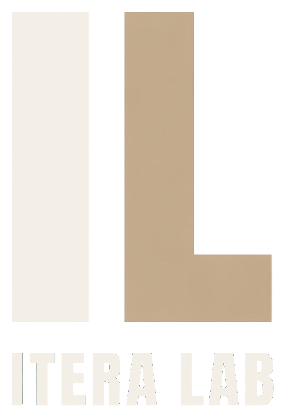
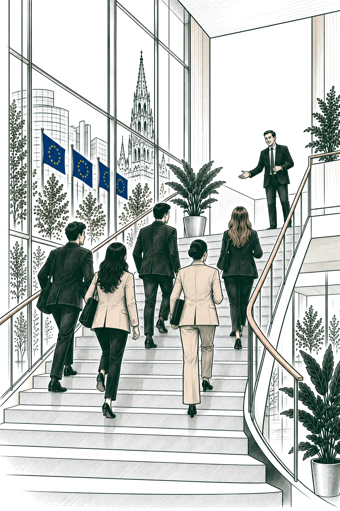
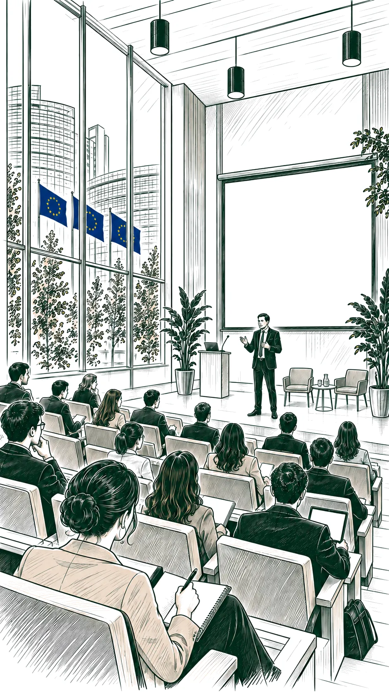
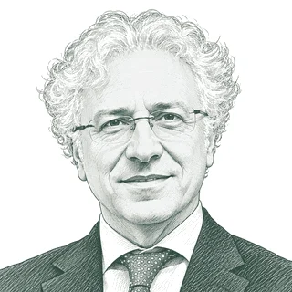
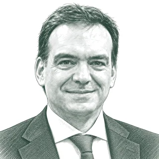
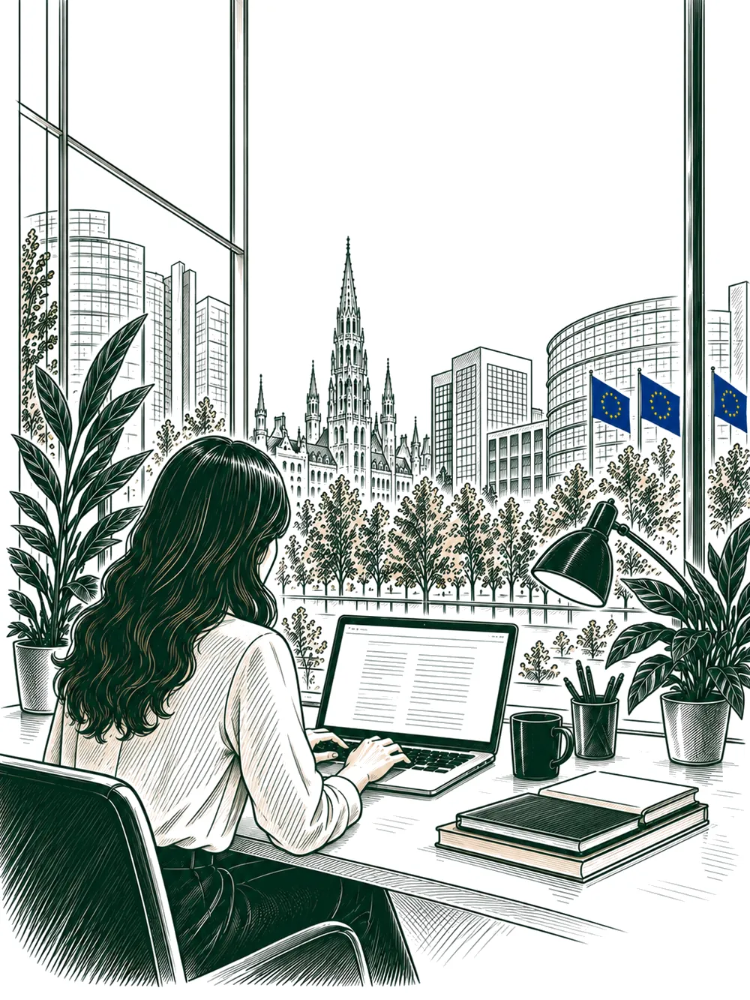
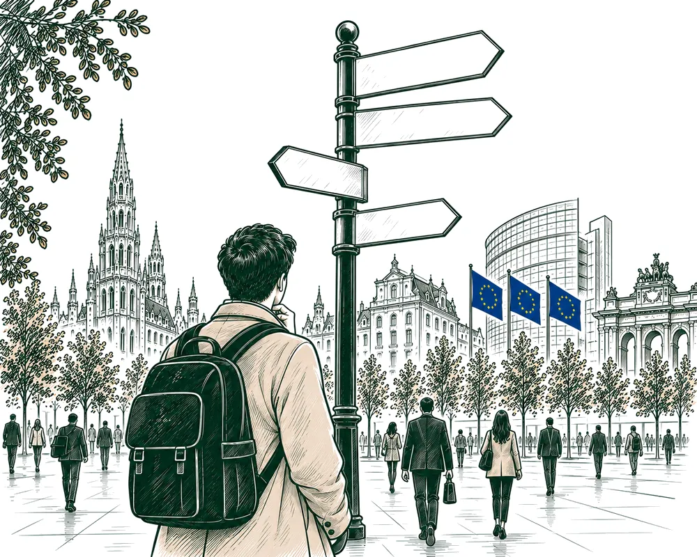
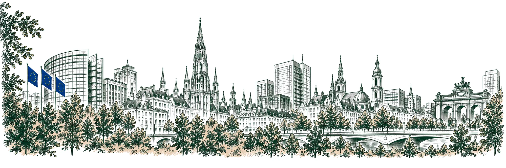

A six-day career orientation programme in Brussels for students, recent graduates and young professionals who want to turn an interest in Europe into a concrete professional path.
Learn. Experience. Engage.

Spring Programme 2027 · Brussels
The programme is delivered in Italian.
What it is
Brussels is one of the world's most important centres for public policy, regulation, interest representation, institutional communication, European journalism, EU law and access to EU funds. Yet from the outside it can appear complex, competitive and opaque: opportunities exist, but they are not always visible, and entry routes are rarely linear.
IteraLab is not a course on the European institutions: it is an orientation programme on European careers. It is built through guided first-hand accounts from professionals who work in the Brussels ecosystem every day. Every member of the Faculty follows a shared method, designed to turn personal experience into tools you can actually use.
We don't teach Europe.
We help build European careers.

The programme
Six days in Brussels, ten modules. Each one is led by the people who do that job every day, and covers what the work actually involves, who does it and how to get in.
| Module | What it covers |
|---|---|
| 1 | The European ParliamentThe powers of the European Parliament within the European legislative process. How the administrative machine works in practice — officials, accredited and local assistants, political group staff, trainees — and how contracts and prospects differ. The Parliament’s sensitive relationship with interest representatives and lobby groups. |
| 2 | The Permanent Representation and the CouncilHow the Council works and how a member state's position is formed. The Permanent Representation: what it does, who staffs it and how it relates to national administrations. |
| 3 | The European CommissionThe structure: Cabinets, Directorates-General, Directorates, Units and horizontal services. The life of an initiative, from programming and consultation to impact assessment, adoption and inter-institutional negotiation, through real cases and the skills a Unit looks for. The professional profiles — AD and AST officials, contract and temporary agents, seconded national experts, trainees — and the Blue Book traineeship: requirements, length, prospects. |
| 4 | EU competitions and EPSO selectionsWhere and how to find information on EPSO competitions. The types of selection and the stages of a competition. The role and the methods of the European Personnel Selection Office in the selection process. A closer look at the CAST procedure for contract agents. |
| 5 | Public affairs and consultancyThe Brussels consultancy market: who the players are, how large they are, how they sell. The daily work: legislative monitoring, briefings, stakeholder mapping, position papers, events. How an advocacy strategy is built and how a result is measured. |
| 6 | EU head hunting and the job marketHow a search is run, what makes a profile placeable and what holds it back. The market: profiles in demand, salary levels, mobility between parts of the ecosystem. How to prepare for an interview and how to negotiate an offer. |
| 7 | EU funding and project designThe European programmes and how they are managed — directly, indirectly and under shared management. The anatomy of a real call: building the partnership and running the project. Who employs in this field — public bodies, agencies, consultancies, universities, NGOs — which roles they offer and how to approach them. |
| 8 | In-house lobbying: EU affairs inside a companyThe European affairs office of a large group: monitoring, direct advocacy, institutional relations, events. How a corporate position is formed, and how trade associations and coalitions come into it. The profiles companies look for and the ways into an in-house EU team. |
| 9 | EU journalism and institutional communicationHow a European story is built, how sources are found and how a complex file is made readable. The ways into journalism: internships, freelancing, competitions, agencies, press offices. Institutional communication: what it is for, what constrains it and how the career path differs. |
| 10 | NGOs and European civil societyThe landscape of NGOs and European networks, and how they work with the institutions. How an advocacy campaign is built with limited resources. The profiles in demand and the real working conditions of the sector. |
How a session works
It is what makes the programme a method rather than a series of talks.
Studies, first jobs, arriving in Brussels, career choices, obstacles met and chances taken: real paths, rarely linear.
The current role, daily responsibilities, counterparts and files — with a practical case whenever possible.
The technical and soft skills expected of a junior profile, and the most common mistakes in applications.
CVs, motivation letters, LinkedIn, interviews, applications, networking and first professional steps.
Roughly one third of every session is reserved for a direct exchange with participants.

The Faculty
The IteraLab Faculty is composed of senior practitioners in their respective fields. They contribute to the programme alongside their professional activity — as speakers in the modules, or by taking part in the networking moments — and are invited edition by edition: the composition varies, the standard does not.
Each edition is built around ten modules: the brochure sets out the programme and the speakers confirmed for it.
He worked at the European Parliament for more than twenty-five years, first as a parliamentary assistant and then as an official in the Directorate-General for Communication, on information, communication and on projects and events aimed at students and young professionals. That experience is part of where the idea for IteraLab came from.
Co-founder of a Brussels-based strategic consultancy working in public affairs and institutional relations between Italy and the EU. Educated at the London School of Economics, he supports companies and organisations in reading European decision-making.
He spent more than thirty years as a permanent official of the European Commission, in the Directorate-General for Internal Market, Industry, Entrepreneurship and SMEs, close to fifteen of them in management roles, alongside work of growing responsibility in human resources. He now advises independently on EU affairs.

He has been the energy and atomic questions expert at the Italian Permanent Representation to the EU since 2023. He spent almost nine years at the European Commission, first as a seconded national expert at the Energy Directorate of DG RTD, and was Italy's delegate to the Nuclear Law Committee of the OECD Nuclear Energy Agency. He is a senior officer of ENEA.
She leads the policy department of a Brussels-based public affairs consultancy, coordinating the firm's main portfolios with a particular focus on digital files. Before moving into European public affairs she worked on social issues, coordinating a civic movement and a local association.
Partner at a Brussels-based executive search firm recruiting profiles in advanced technology and general management. Former Secretary General of E.DSO and head of Enel Group's European public affairs. His career also includes twelve years at Fiat and fifteen in economic journalism.
He is Senior Partner at IDP European Consultants, a consulting and training firm specialised in EU funding programmes and financial instruments. An expert in European project design since 2008, he works on international partnerships and access to EU funding. He has been an external expert and evaluator for the European Commission, and advised the World Bank for fifteen years.
From Brussels he leads the European institutional relations of Italy's electricity transmission operator, he acts as Secretary General of Gruppo d’Iniziativa Italiana and sits on the board of APRII. He previously spent eleven years with the Eni group, where he was head of relations with the European Parliament.
He founded MUST & Partners in 2014 and has more than twenty years of experience in European affairs, having started in Brussels as a staffer at the European Parliament. He teaches European lobbying in several Italian universities and institutes, and serves as Vice-President of APRII.
She has headed the European Parliament's Services and Media Unit since 2018, after an internal career as editorial coordinator and as press officer and web manager to the President of the European Parliament. She arrived in Brussels in 2004, working in the Council's press office, then for Members of the Parliament, and from 2007 to 2012 as Policy Adviser at CER.
He leads the policy and advocacy department of the European Food Banks Federation in Brussels, coordinating its advocacy strategy and institutional relations. A lawyer, he served two terms as a Member of the European Parliament from 2014 to 2024, working on human rights, development cooperation, industry and energy.

He has worked in European affairs for more than twenty-five years, on institutional strategy, EU policymaking and public affairs. Before leading the Veneto Region’s Brussels office he spent eight years at the Permanent Representation of Italy to the EU, mainly on competition, State aid and the internal market. He has led institutional offices and managed EU-funded initiatives with public authorities, universities and research organisations.
He is a partner at Forward Global in Brussels, where he works on public affairs strategy, with a focus on competition and antitrust, digital policy and transport. Before moving into consultancy he spent more than fifteen years at the European Parliament, working with the committees on economic affairs, trade and transport. He has followed the EU’s digital antitrust files since 2012.
He has headed the secretariat of Europe’s largest network of technology SMEs since 2008, representing some 45,000 companies before the EU institutions on cybersecurity, artificial intelligence, data and standards. He is Vice Chair of the General Assembly of ETSI and sits on the board of ECSO, and he co-founded the EuroStack movement for European digital sovereignty.
Practical information
| Duration | Six days, Monday to Saturday |
| Language | Italian |
| Location | Brussels, European quarter |
| Group size | 16 to 25 participants |
| Fee | € 1,370 per person, VAT included |
| Included | All ten modules, programme materials and two networking moments |
| Not included | Travel, accommodation and meals |
| Edition | Dates | Deadline to apply |
|---|---|---|
| Edition I | 12–17 April 2027 | 19 Feb 2027 |
| Edition II | 24–29 May 2027 | 2 Apr 2027 |
| Edition III | 14–19 June 2027 | 23 Apr 2027 |
Admission is decided on the merit of the application. Places on each edition are limited, so the date of submission is taken into account as well: applying early gives the strongest chance of a place.
How to apply
Fill in the application form. It takes about fifteen minutes. A CV is welcome but not required at this stage.
We review applications on a rolling basis until the deadline for the edition you choose, and we get back to every applicant within 15 days from the submission of the application form.
If your application is successful, our team will get in touch with you with everything you need to know to confirm your place.

Frequently asked questions
The programme is delivered in Italian. Sessions, materials and discussions are in Italian, although several of the organisations and topics discussed work in English. This website is in English so that the programme is findable, but you should be comfortable following six days of content in Italian.
No. The programme is designed for people who are approaching the European ecosystem, not for those who already work in it. Curiosity and a genuine interest in building a European career matter more than your CV.
Yes. Most participants are Master's students, recent graduates or young professionals in their first years of work.
The € 1,370 fee covers the ten modules of the programme, the materials and the two networking moments. Travel, accommodation and meals are not included and are arranged by participants.
Accommodation is not included and each participant books their own. To make it easier, we send admitted participants a list of short-stay options within reach of the European quarter. Brussels in spring fills up quickly, so booking early is worth it.
A deposit of € 370 is due within 7 days of the confirmation of admission, and the balance of € 1,000 no later than 21 days before the start. You can withdraw within 14 days of confirmation and get everything back, deposit included. After that, our cancellation terms apply.
You will receive a confirmation email immediately, and an answer on your application within two weeks. If you are admitted, we send the payment details and the practical information pack.

